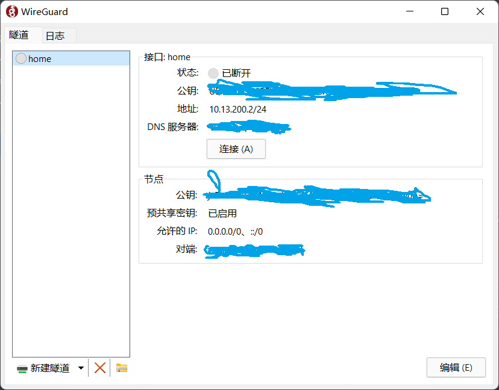

远程访问通常可以用向日葵、frp，但有限制，向日葵远程桌面还行，特定端口无法实现，比如ssh，frp可以做到任意端口但每个服务都要映射一次很繁琐，尤其是端口多的情况挨个配置也费劲，比如这77个端口:
换成vpn异地组网可以有效解决以上问题，在外远程访问家庭内网只需打开开关即可，使用ip、port跟内网一模一样，无需额外端口映射。
对比发现wireguard效率高，速度快，接下来介绍2种方案，分别有公网ip、无公网ip。
一、有公网ip
如果是固定公网IP直接A记录绑定域名就行，如果是动态公网IP则用ddns绑定，ddns可以跑在家内网任何一台机器，比如openwrt：
或者docker跑ddns，映射域名: home.example.com
docker run -d --name=cf-ddns --restart=always -e API_KEY=*** -e ZONE=example.com -e SUBDOMAIN=home oznu/cloudflare-ddns
经测试，在openwrt自身docker跑wg会导致客户端连不上，所以要在内网其他任何一台机器运行wg:
1 | mkdir -p /opt/wg-easy |
openwrt必须是主路由拨号，旁路由无法设置wan口端口转发，在 网络 -> 防火墙 -> 端口转发 中设置，假设wg运行在debian，其ip为192.168.2.103，新增规则让外部54321/udp转发到debian的54321/udp端口：
在Turbo ACC中关闭SFE，否则客户端无法连接，“软件流量分载”可以打开：

访问wg后台管理界面: http://192.168.2.103:51821，登录进去添加一个客户端（peer）：
手机扫码即可连接：
电脑wg客户端导入配置文件：

ios要到美区下载wg客户端。
至此可以通过外网4g远程访问家里设备，比如路由器管理页：
wg客户端连接成功就自动继承家里网络，如果家里挂了梯子，手机也拥有科学上网能力，相当于开了小飞机 or 小火箭。
二、无公网ip
家里没有公网ip则要使用vps中转，配置略复杂，数据传输速度依赖vps带宽，没有直连快。
原理是通过frp把内网54321/udp暴露到公网4001/udp，wg客户端就使用公网4001/udp进行连接
vim /opt/frpc.ini
1 | [common] |
启动frp：
docker run -d --name frpc --restart=always -v /opt/frpc.ini:/etc/frp/frpc.ini --network=host snowdreamtech/frpc
运行wireguard：
1 | mkdir -p /opt/wg-easy |
通过vps中转就不需要防火墙端口转发了，直接登录wg管理界面添加peer，手机扫码连接就行。
If you like this blog or find it useful for you, you are welcome to comment on it. You are also welcome to share this blog, so that more people can participate in it. If the images used in the blog infringe your copyright, please contact the author to delete them. Thank you !